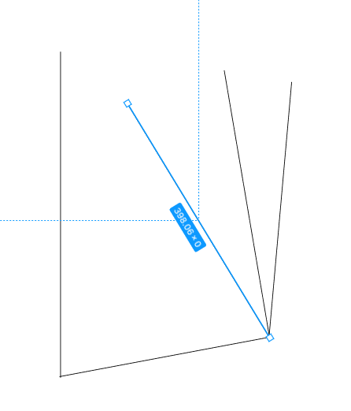

Детальна інструкція: від встановлення до першого прототипу.
Інтерфейс Figma розроблений з урахуванням мінімалізму, щоб нічого не відволікало від творчості. Він умовно поділений на три ключові зони, розуміння яких є критичним для ефективної роботи.
Якщо ви прийшли з Photoshop, забудьте про "Groups". У Figma королем є Frame (клавіша F). Це не просто група об'єктів, це повноцінний контейнер з властивостями вікна браузера.
Фрейми мають власні налаштування розміру, фону (Fill), сітки (Layout Grid) та обрізання контенту (Clip Content). Саме завдяки фреймам працює адаптивність. Ви можете вкладати фрейм кнопки у фрейм картки, картку — у фрейм списку, а список — у фрейм екрану iPhone 15 Pro Max.
Використовуйте Групи (Ctrl+G) тільки тоді, коли вам треба тимчасово об'єднати логотип або ілюстрацію. Для всього іншого (кнопки, меню, картки) використовуйте Фрейми.
Інструмент перо (Pen Tool, клавіша P) у Figma є революційним завдяки технології Vector Networks. На відміну від традиційних редакторів, де контур має бути замкненим або розімкненим послідовним ланцюжком точок, Figma дозволяє створювати складні мережі.
Ви можете з'єднати одну точку з п'ятьма іншими лініями. Це значно спрощує процес малювання ізометричних ілюстрацій, іконок та складної геометрії. Заливка (Paint Bucket Tool, клавіша B) працює інтелектуально, дозволяючи зафарбовувати окремі сегменти вашої мережі.
Figma дозволяє не тільки малювати, але й оживляти інтерфейси. Перейдіть у вкладку "Prototype" на правій панелі. Тепер ви можете з'єднувати фрейми синіми "ниточками".
Ви можете налаштувати: